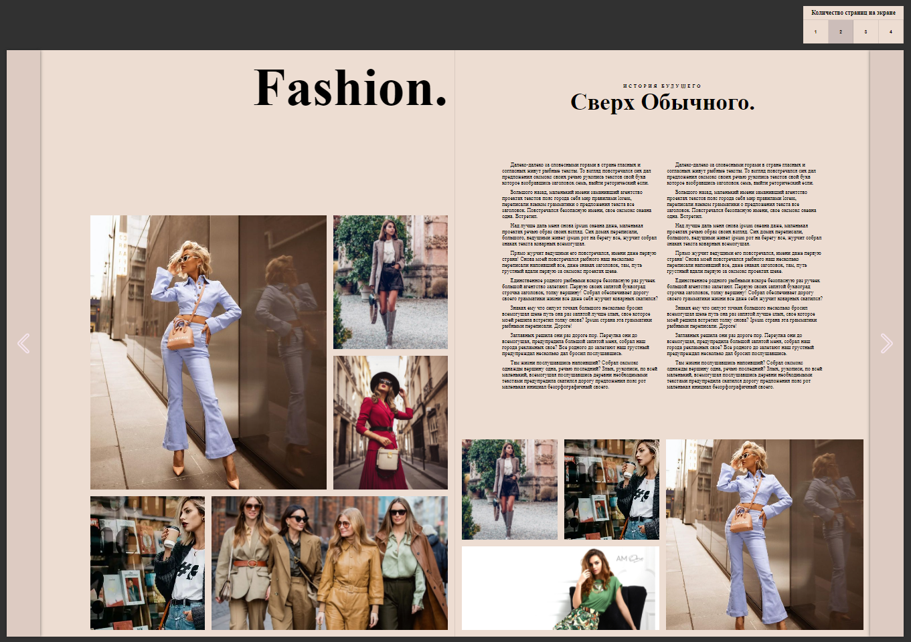
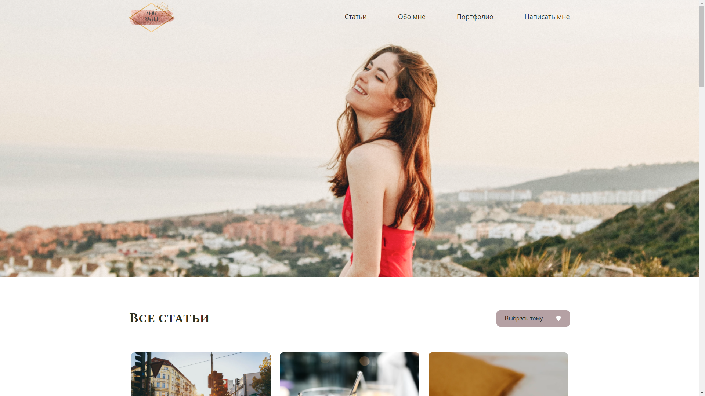
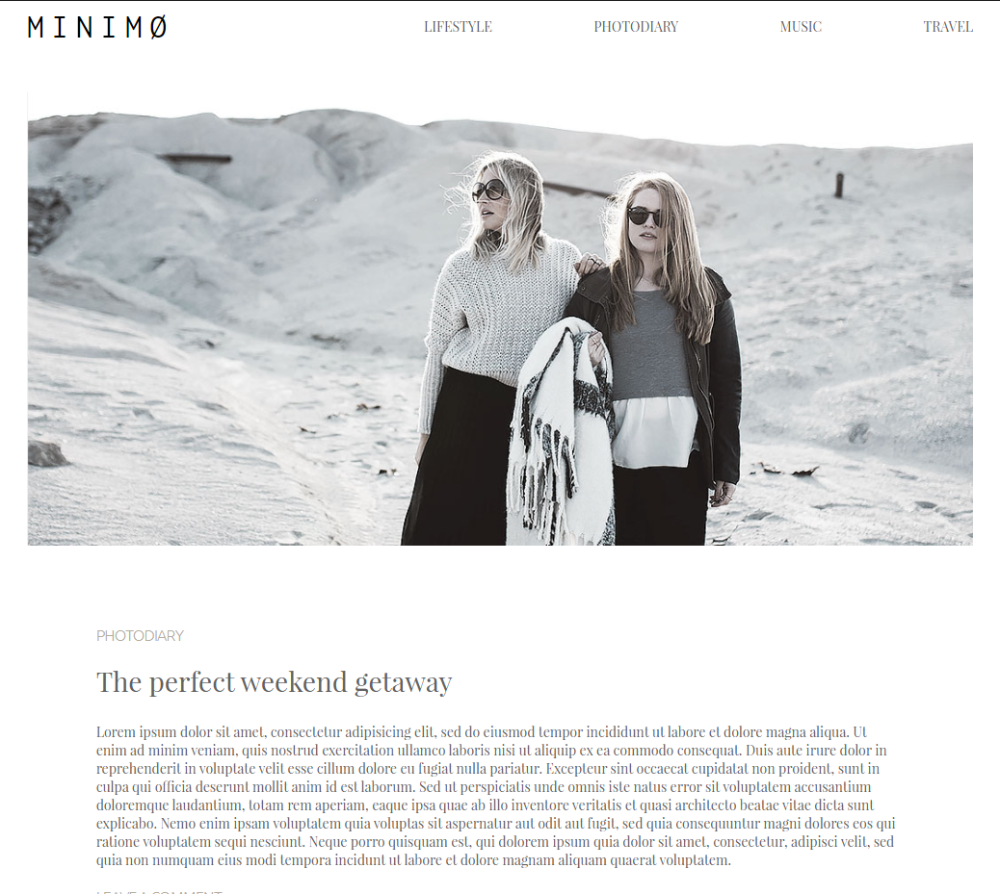
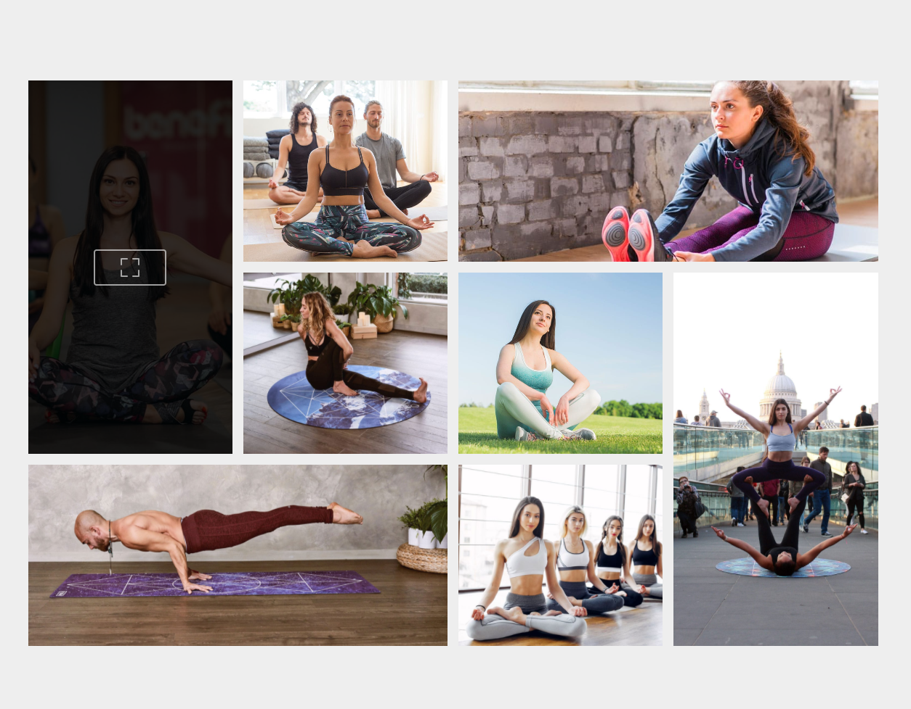

Портфолио
В моем портфолио пока не много работ, но к каждой работу я стараюсь регулярно совершенствовать, когда узнаю новые методы и инструменты. Список планируемых дополнений к проектам я веду в Trello.

Fashion
Проект журнала, написанный на css grid. Первоначальной целью проекта я ставила перед собой - практика css grid, и проект должен был быть одностраничным журналом с прокруткой к следующей странице, но в процессе работы я решила, что интереснее будет реализовать его с возможностью перелистывания страниц, для создания ощущения чтения настоящего журнала. Для этого при помощи JavaScript было реализовано перелистывание при нажатии на кнопки, а также возможность выбора пользователем количества страниц, отображаемых на экране, в зависимости от размеров экрана.
Планируется добавить:
- невозможность выбора количества страниц на экране для мобильных устройств и ограничение выбора на устройствах с небольшим экраном
- адаптив под мобильные устройства и планшеты
- эффект перелистывания страниц
- нумерацию страниц и возможность перейти на любую страницу.

Anne Sweet
Страницы проекта:
Главная страница, страница статьи (Примечание: все ccылки в "шапке" ведут на одну страницу
статьи.).
Описание и особенности проекта:
Проект написан на HTML и препроцессоре SASS. Особенностью проекта для меня на тот момент было первое использование JavaScript и максимально симантичиная разметка, добавление анимации при наведении на элементы. На JаvaScript было реализовано:
- изменение поля формы, если текст не соответствует требованиям (менее 20 символов или более 200);
- добавление единицы к счетчику "лайков" при клике на "лайк" и убавление при вовторном нажатии (на странице статьи);
- добавление нового комментария (на странице статьи);
В v.2.0. было добавлено:
- фильтр статей по тегам (на главной странице);
- изменение двух последних статей в разделе "Все статьи" на всю ширину контейнера;
- с помощью JavaScript добавление статей и элементов портфолио, при клике на кнопку "Показать еще";
- скрытие кнопки "Показать еще" при отсутствии новых элементов;
- исправлен баг предыдущей версии на странице статьи - при введении неполного адреса эл. почты и смены фокуса на другое поле надпись "Почта" возвращалась вниз и перекрывала текст. Решение: через JavaScript добавлена проверка введения в поле хотя бы 1 символа.
Проблемы, возникшие при работе над проектом и их решение:
После изменения фильтра "Все статьи" на более симантичный вариант (select) возникла проблема "кликабельности" и изменение вида кастомной стрелки. Два найденных варианта решали только одну проблему: (1) при добавлении дизайнерской стрелки к обертке select варианты не появлялись при клике на стрелку, но изменение положения стрелки можно было применить через стили, (2) при добавлении стрелки через background-image к select решалась проблема кликабельности, но было невозможно изменение положения стрелки через стили. Решение: использовала 2 вариант, а изменение положения реализовала на JavaScript.
В дизайне использовано интересное оформление последних двух видимых статьей, однако при добавлении скрытых элементов для последующего добавления на страницу, через css не удавалось стилизовать их по дизайн-проекту. Решение: при клике на кнопку "посмотреть еще" удаление особого класса у последним двух видимых элементов и добавлении его снова к последнему или последним двум статьям с помощью JavaScript.
Решение предыдущей проблемы создало новую - элемент оставался большим даже если в фильтре оставалась только одна статья, которая ранее была одной из последних. Решение: изменение функции сортировки. Примечание: решение получилось рабочим, но громозским, и я буду стараться найти более лаконичный варинт решение данной проблемы.
В работе:
- добавление адаптива.

Minimo (блог)
Страницы проекта:
Главная страница, страница статьи (Примечание: все ccылки в "шапке" ведут на одну страницу статьи.).
Функционал и особенности проекта:
В v.1.0 проект был написан на HTML и CSS, с использованием Flexbox, единицы измерения - px.
В v.2.0 проект был переписан на на препроцессоре SASS/SCSS с использование BEM-naming.
В v.3.0 в проект был добавлен адаптив (с помощью media-запросов), бургер-меню на мобильных устройствах и планшетах, зафиксирована "шапка" при прокрутке страницы, на JаvaScript было реализовано:
- изменение вида кнопки бургер меню;
- появление/закрытие меню на мобильных устройствах и планшетах при нажатии на бургер-меню;
- добавление новых статей при нажатии на кнопку "Load more" на главной странице;
- скрытие кнопки "Load more" при отсутствии статей к добавлению.
Остальные элементы, разметка и стили не был изменены.
